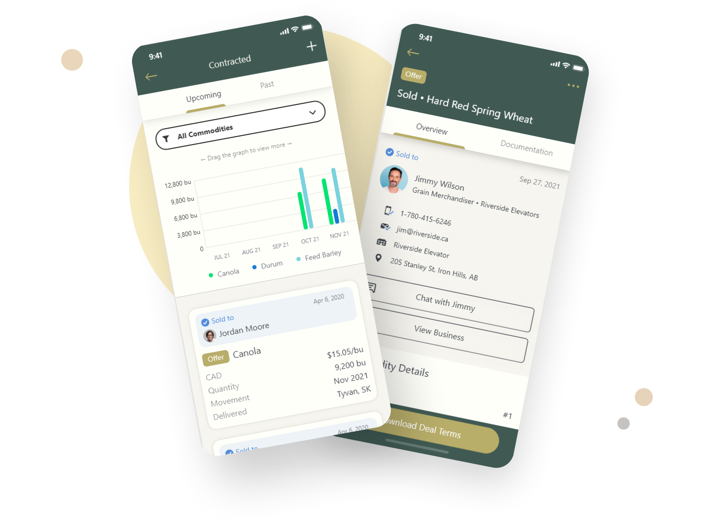
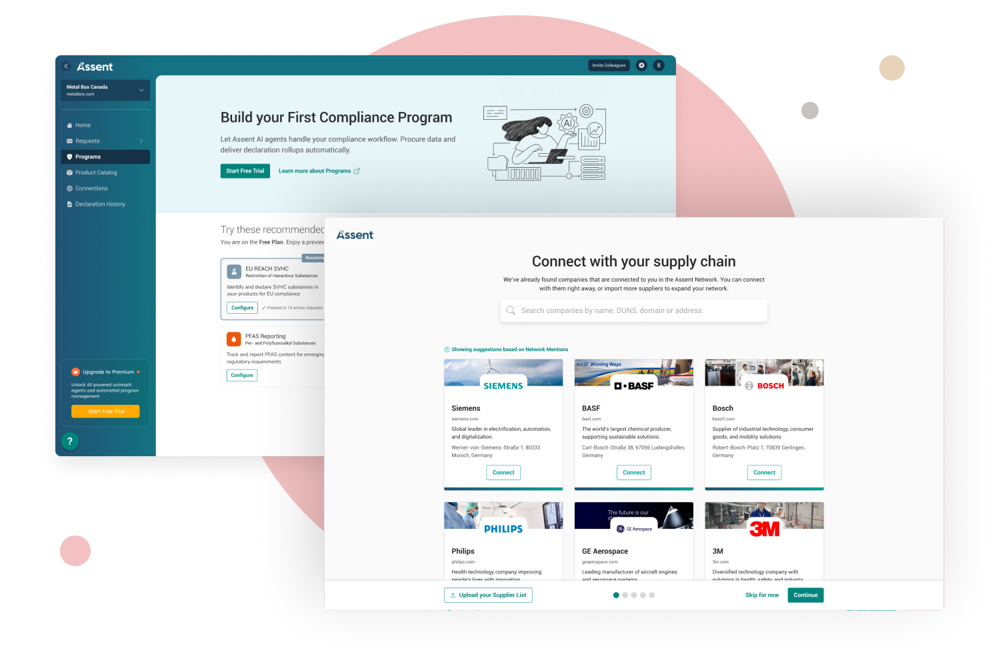
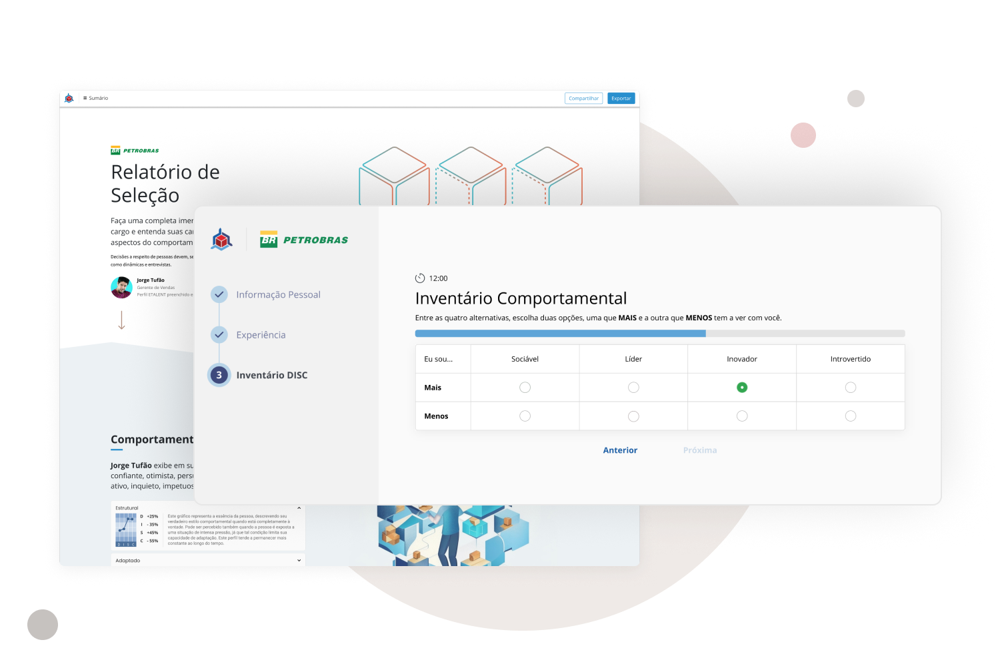
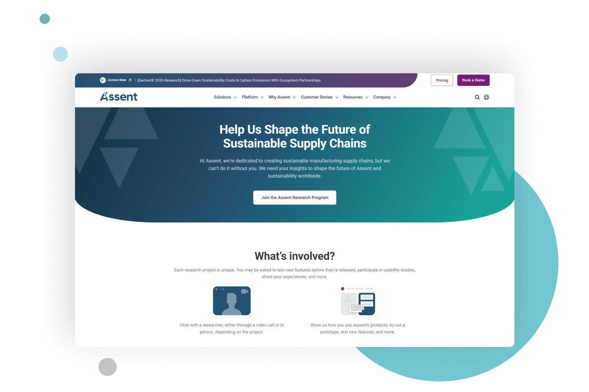
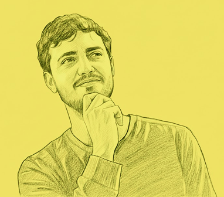

I design tools, systems and interfaces by combining AI, experimentations, and deep user insights to make experiences reliable, scalable and valuable.
Currently Designing how global manufacturers assess and respond to compliance risk across their supply chains at Assent.
Previously Built and repositioned products across marketplaces, talent assessment platforms, and enterprise systems.
I believe the best product experiences emerge from cross-functional curiosity.
I thrive at the intersection of where business goals, user needs, and technical constraints collide. My curiosity fuels meaningful conversations and opens up discovery paths that help teams bet more confidently. It helps us build smarter and with purpose.
Designed the End-to-End Pivot for Combyne’s Strategic Acquisition.
Led the transformation of a struggling marketplace into a user-centric management tool for farmers, owning the experience from on-site field research to final shipping. By validating a "Farmer-First" direction through rapid iterations and partnering closely with the founder and team, I reignited user engagement and defined the product value that secured the company’s ultimate acquisition.


Shaped the Experience for a ~$1B Mid-Market Expansion.
I moved Assent’s mid-market strategy from business concept to commercial viability. By evaluating AI-powered prototypes closely with super users, I identified the core requirements for a self-service model that de-risked the roadmap and enabled the product to confidently bet on scaling across a global network of tens of thousands of companies.
Revitalized an HR Platform to Drive a 130% Revenue Increase.
Directed and facilitated the end-to-end product overhaul, transforming technical behavioral data into an intuitive decision-making experience for talent assessments. This resulted in over $1M USD in new annual growth.


Built a Centralized Research Engine to Accelerate Product Discovery.
I shaped Assent’s discovery process from a manual bottleneck into a scalable infrastructure that enables continuous learning. The automated participant screening and self-service research toolkit, amongst others, empowered the team to conduct hundreds of in-depth interviews continuously and catalog thousands of product insights that ultimately informed the product roadmap.
Three Principles Shape My Design Practice.

Embrace Curiosity
Listening intently is how we get better insights. Whether diving into interviews or shadowing users in the field, we must lead with inquiry, not ego.

Clarity Through Movement
Clarity rarely shows up fully formed at the start. More often, it reveals itself after motion, after something real exists in the world, and the trade-offs are no longer theoretical.

Enjoy the Process
Find joy in collaboration, celebrate small wins with the team, and take pride in designs that make a difference. A happy designer makes better designs.
A few words from people I’ve worked with.
“Bruno combines attention to detail and determination with a constant pursuit of new knowledge, using his curiosity and dedication to elevate the quality and impact of the work.
“His strengths include a strong focus on the creation process, clarity in wireframing and presentations, and a flexible, collaborative approach.
“He makes teammates feel appreciated by recognizing contributions and fostering a positive, supportive team dynamic.

Let’s make something great together.
Whether you're building something new, need a fresh perspective, or is just looking to discuss an opportunity. I’d love to hear about it.